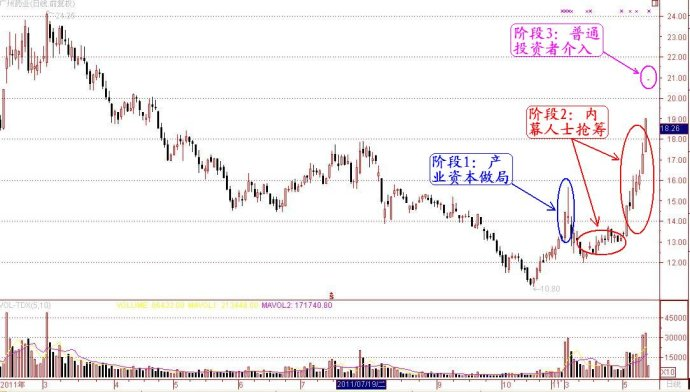

第167篇•对广州药业和白云山走势的深度分析(1)
谷为陵
在大盘这两周转弱的情况下，广州药业和白云山这两只“姊妹股”却横空出世，逆市大涨。直至昨天，市场投资者才明白这两只股票大涨的原因。原来是广药集团从香港鸿道(集团)收回了价值巨大的“王老吉”商标。在此利好信息的刺激下，这两只股票昨天又是齐齐的涨停板！毫无疑问，这两只股票正在成为市场关注的焦点，且在今后相当长的时间里，都会对市场产生深远的影响。
纵观广州药业和白云山这一个多月的基本面变化和股价走势，完全是一场由多方参与的博弈的结果，堪称经典。整个博弈的过程可分为三个阶段：一是产业资本做局阶段，二是内幕人士抢筹阶段，三是市场投资者介入阶段。下面分述之：
第一阶段，是产业资本做局阶段。这两只股票自2011年11月4日至今年3月27日停牌，商讨重大事项。最终结果是，白云山和广州药业以1:
0.95换股合并。为什么要合并？当时没有人能够讲出十分充分的理由。但现在看来，理由很简单，通过这次合并，广药集团实际上是将所持的白云山股份以增发的方式注入到了广州药业。为什么要这样做呢？只能有一个合理的解释，那就是广药集团当时已经预见到了广州药业的股价将会大涨，如果不趁着广州药业股价还未大涨前，将所持的白云山股份以增发的方式注入到广州药业，那么，以后在对价时就要吃很大的亏，同样股数的白云山就只能够换取很少量的广州药业股份。
如，现在广药集团持有白云山1.67亿股，按照目前的1:
0.95换股合并方案，广药集团可以换取1.59亿股广州药业。假若这次暂时不换股，若白云山股价不变，而广州药业股价上涨一倍的话，那么，白云山和广州药业的换股合并方案将变成1:
0.5，那么，广药集团持有的1.67亿股白云山只能够换取8350万股广州药业。
换股合并计划能否成功的关键之处，就是要让广州药业股价能够大涨，为了将广州药业股价大涨的效能发挥到极致，就让白云山合并到广州药业中。只要合并后的广州药业股价大涨，那么，不仅广药集团持有的原广州药业股份会大幅增值，而且其所持有的白云山股份换取的1.59亿股广州药业也会坐享其成，大幅增值。
那么，广药集团怎么会知道广州药业的股价将会大涨呢？现在看来，合理的推测是，当时广药集团已经将王老吉的商标权之争交给了中国国际贸易仲裁委员会进行仲裁，并得到了必将很快胜诉的信息。广药集团曾一直计划，一旦从香港鸿道(集团)收回王老吉商标，广药集团就会择机将王老吉商标注入广州药业。广药集团当然清楚，将王老吉商标注入广州药业意味着什么，意味着广州药业的股价将会井喷！既是如此，广药集团当然希望能够将此收益最大化。于是，一个“收回商标——注入广州药业——白云山、广州药业合并——收益最大化”的逻辑链条得以形成。
第二，内幕人士抢筹阶段。自今年3月28日至5月2日，广州药业和白云山的股价在公告合并并复牌后，股价冲高回落，市场似乎对于两者的合并不感兴趣。其实，这只是障眼法而已，核心的内幕人士已经开始悄然进场，耐心低吸呢。自5月3日至11日，广州药业带动白云山突然放量大涨了约40%。而在此期间，并没有任何公开的利好信息公告。现在回溯的话，这应该是仲裁结果已经开始在那些非核心内幕人士间开始扩散了，引发了他们的抢筹行为。
当然，在这个阶段，也有一部分长期关注广州药业潜在题材的短线高手，发现该股股价呈现异动后冲进去的，还有一部分短线跟风盘冲了进去，但主流的大买盘，应该就是内幕人士的抢筹盘。
三是市场投资者介入阶段。这就是昨天我们看到的情况。白云山先开的盘，高开后经过短暂的振荡后，就在半个小时内封死了涨停板。而广州药业因停牌一小时，一开盘就直接被巨量买盘全天封死在涨停板上。虽然昨天的龙虎榜显示两只股票都有基金在出货，但我认为，这并不能改变这两只股票短期强势的局面。由于基金在这两只股票上持筹都不多，每只股票都只有约2000万股，根本不经卖的。我的感觉是，基金走得早了一点，干嘛这么急嘛？
下面是广州药业的三个阶段的示意图：

这两只股票后市会怎样发展？这又是一个博弈的问题。这一方面要看广药集团是怎么运作王老吉的，另一方面要看投资者是怎样预期的。总的来说，“王老吉”产业有三个结局：
一是极好，超过加多宝以前的业绩。比如，按照广药集团的计划，“王老吉”产品系列的年销售额在未来5年内将达到500亿元，估计净利润能够达到100亿元左右，那么，“新广州药业”的每股收益将达到7～8元，其股价将超过百元，极有可能成为贵州茅台“第二”；
二是不好不坏，“王老吉”凉茶能够达到加多宝以前的业绩的一半，即年销售额80亿元，净利润16亿元，那么，“新广州药业”的每股收益将达到1.2～1.3元，其股价将定位在30元左右。
三是极坏。“王老吉”品牌运作失败，如以前的“健力宝”一般，失败的原因是广药集团对于“王老吉”品牌的多元化延伸，毁掉了“王老吉”品牌。这种情况不是没有可能，但今年绝不会出现，因为今年广药集团的主战场还是在“王老吉”凉茶上面，广药集团要尽最快速度填补红罐王老吉消失后的市场空白。
对于广药集团和加多宝来说，现在真个是“麻杆打狼，两头害怕”，两者独生、独死、双活皆有可能。但总的来说，广药集团的主动性更强一些，加多宝更被动一些，也更危险一些。但决定商战成败的因素很多，不管怎么说，加多宝能够将年销售额不足亿元的红罐“王老吉”，在短短的10年内做到160亿元年销售额，这样的对手是任何人都不敢小视的。
所以，如何博弈广州药业，对于普通投资者来说是一个很有趣的课题。
（未完待续）